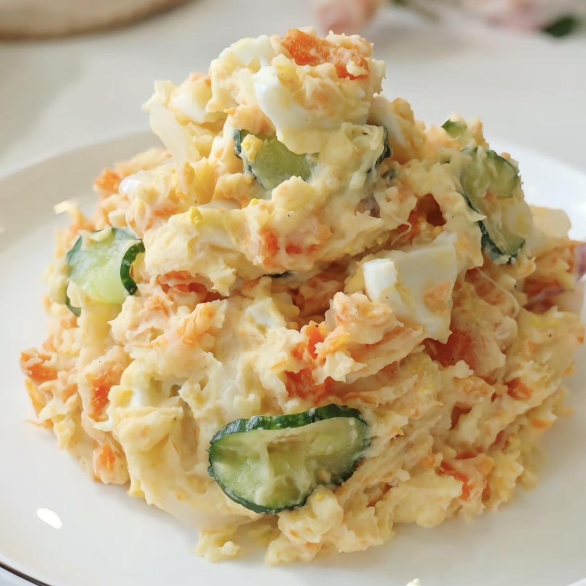

Creamy Mashed Potatoes
A super‑easy lazy‑day side dish, ready in 20 minutes.
Ingredients
400g potatoes
50g unsalted butter
100ml whole milk
salt, to taste
fresh ground black pepper
Instructions
- Peel potatoes and cut them into small, evenly‑sized chunks.
- Place potato chunks into salted boiling water, cook for 15‑20 minutes until fork‑tender.
- Drain the water completely while potatoes are still hot.
- Add butter to hot potatoes and mash thoroughly.
- Pour in warm milk little by little, keep mashing until smooth and creamy.
- Season with salt and black pepper, stir well and serve hot.